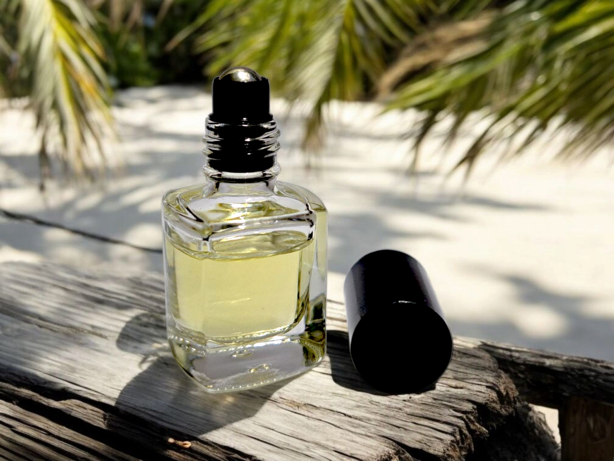

Silver Stone perfume is a bold and sophisticated fragrance that opens with a fresh blend of lemon, lavender, basil, and coriander. The heart features a refined floral and herbal bouquet of rose, oregano, violet, cedar, and jasmine, adding depth and elegance. As the fragrance settles, it unfolds into a rich and grounding combination of leather, oakmoss, musk, and sandalwood, providing a lasting impression of warmth and classic sophistication. This well-balanced composition makes Silver Stone a timeless and versatile scent, perfect for those who appreciate refined and elegant fragrances.